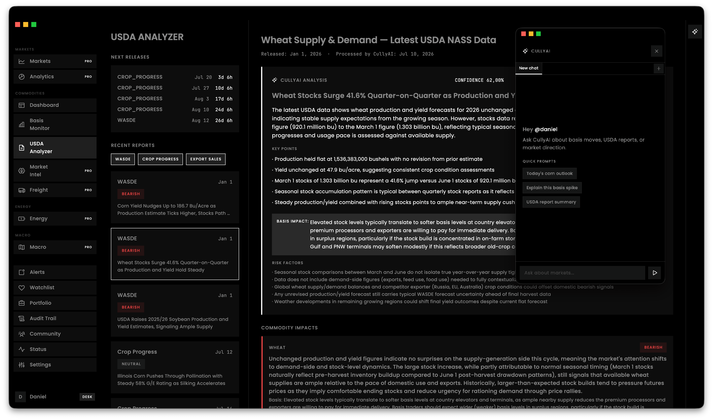
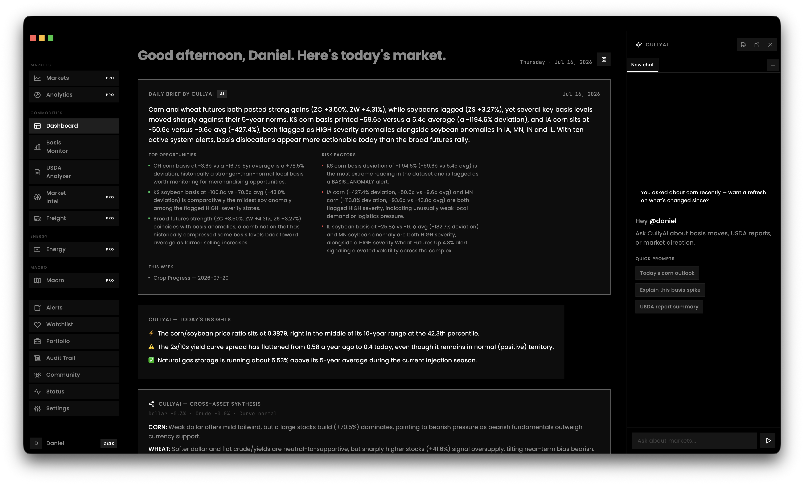
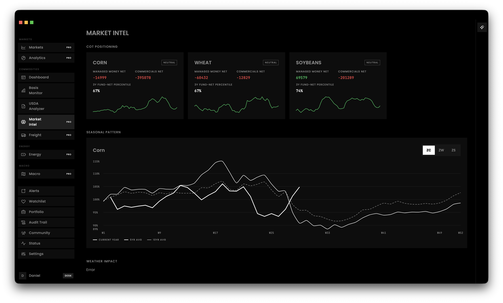
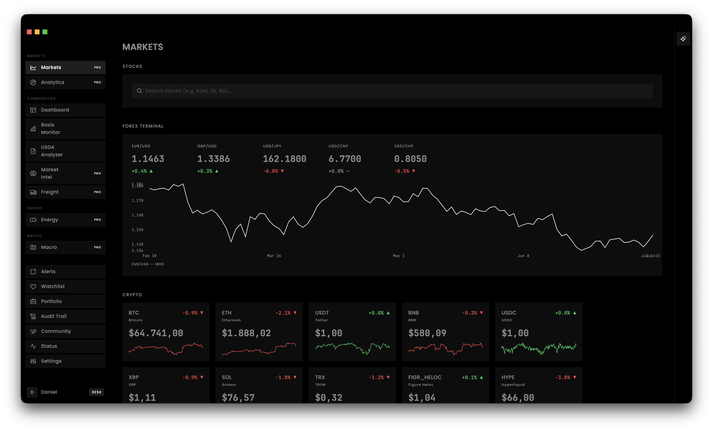
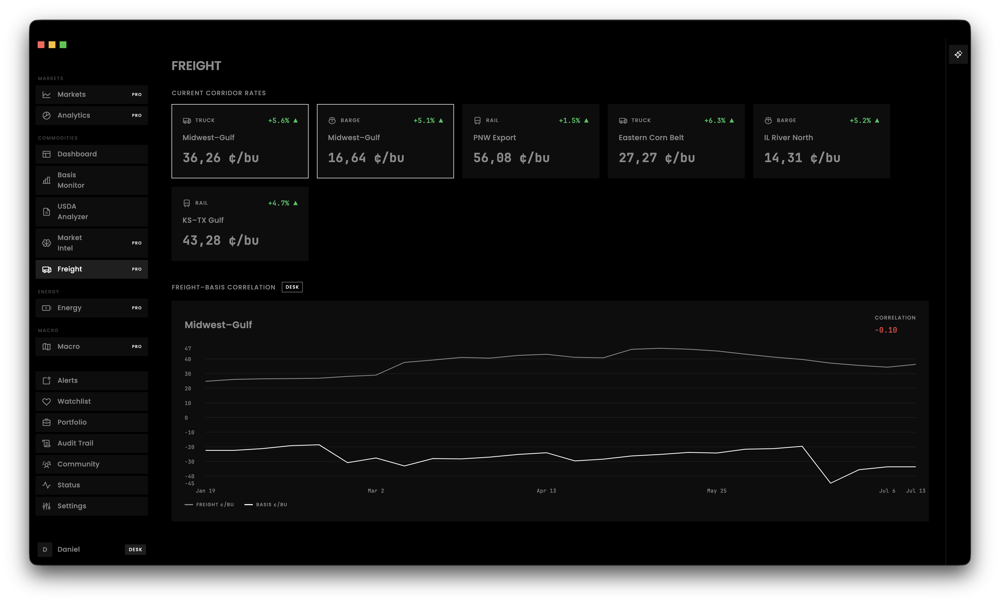

Basis Monitor
Cash price minus futures, live per elevator: map, list and chart by state, with source tooltips and CSV export.
AI-Powered Commodity Market Intelligence Terminal
Croploo brings together real basis, futures, USDA and macro data for corn, wheat and soybeans in one terminal — with alerts, portfolio tracking and CullyAI, your built-in AI market analyst.

What Croploo can do
From weekly basis resolution to an AI analyst that surfaces insights before you ask — Croploo is built for professional commodity traders.
Cash price minus futures, live per elevator: map, list and chart by state, with source tooltips and CSV export.
WASDE and Crop Progress reports built on real NASS numbers, AI analysis, and a WASDE Surprise Tracker with real futures reaction.
Automatic alerts on basis anomalies, futures moves and USDA releases — including a live-computed outcome for every alert.
AI chat panel with streaming responses, memory of past sessions, and proactive, unprompted daily insights.
COT positioning, seasonality, weather, crush/crack/ethanol margins, forward curve and more — all from real sources.
Storage positions, P&L, sell-window recommendations and hedge context — computed live from basis, seasonality and COT data.
Assemble and save your own widget layouts — plus Cross-Asset Synthesis from dollar, oil, yield curve and WASDE.
Programmatic access to basis, futures and USDA data via API key — for Desk and Institutional tiers.




Markets & Analytics
Forex, crypto, treasury curve, sector heatmap, stocks and macro indicators — all in the same terminal, so the bigger picture stays visible.
Available for
Native builds for Windows, macOS and Linux.
Setup .exe for Windows 10/11 (64-bit)
Download Recommended for you.dmg for Apple Silicon & Intel
Download Recommended for you.AppImage, runs on most distros
DownloadAll installers are signed with SHA-256 checksums, available on the corresponding release page.
Transparency
Every value in the terminal shows its source and last-updated time on hover.
Pricing
Try Pro free for 14 days, no credit card required.
$19/month
$49/month
$99/month
$399/month